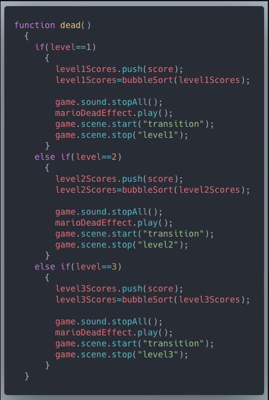
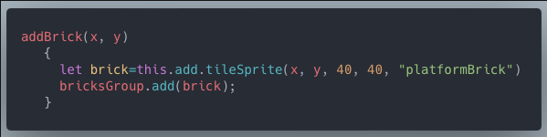
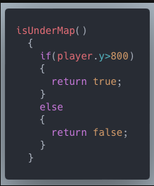
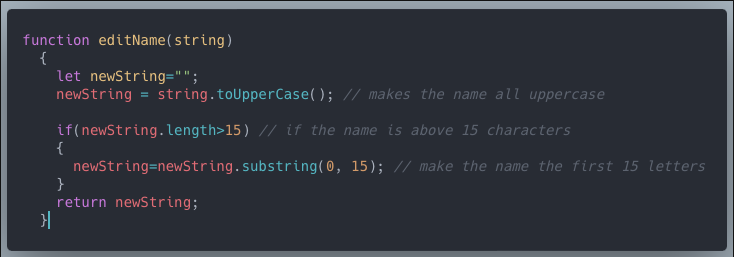
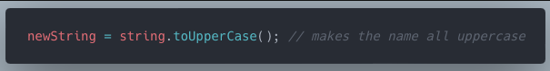
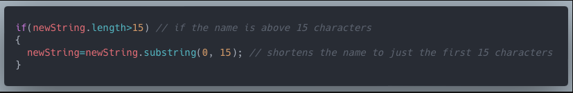
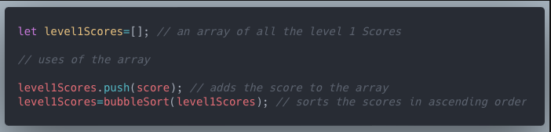
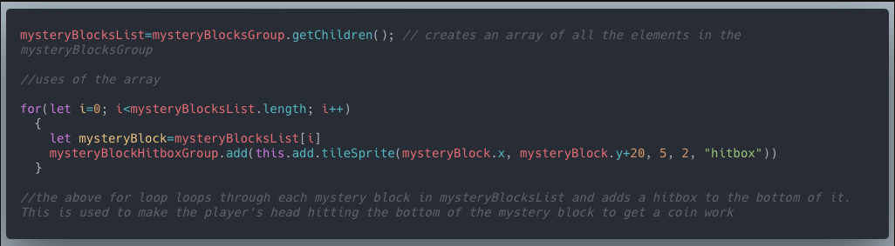
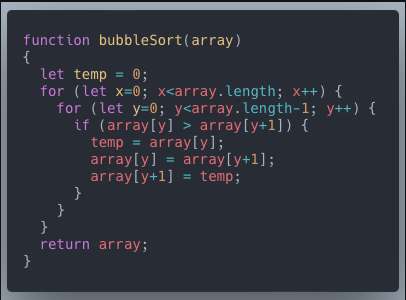

|  |
Function Without ParametersThis function is called once the player dies. Since this can happen on multiple different occurences, I decided to put it in a function. The function takes in no parameters and does not have a return value. It adds the player's score before they die to the list of scores. It stops the background music then plays the dying sound effect. It opens the transition screen and closes the game screen. |
Function With ParametersThis function is called when placing a brick in the game. It has two parameters, x and y, and it doesn't have a return value. This will denote the x and y value of the brick added. The function will also add the brick into the brickGroup. |
 |
|  |
Function Without Parameters and a Return ValueThis function is called in the update section of the game scene. It does not take in any parameters and has a return value of either true of false. It returns true if the player has fallen below the ground and false if it hasn't. This is because if the player falls out of the world, the player dies. |
Function With Parameters and a Return ValueThis function is called at the start of the game to edit the name entered in the starting prompt. The function takes in one parameter and returns the new string after the adjustments. The function capitalizes the player's name. Also, if the length of the string is above 15, it shortens down the name to the first 15 characters. This ensures that long names won't glitch the game. |
 |
String Function #1 |
 |
String Function #2 |
 |
|  |
Array Example #1 |
|  |
Array Example #2 |
Bubble SortingThis bubble sorting function can be used anywhere in the code. Using a bubble sorting algorithm, it will successfully order numbers in a list in ascending order. I primarly use this function in my code when finding the high score for each level. The function would order the list of scores from lowest to highest then I could get the last element to get the high score. |
 |